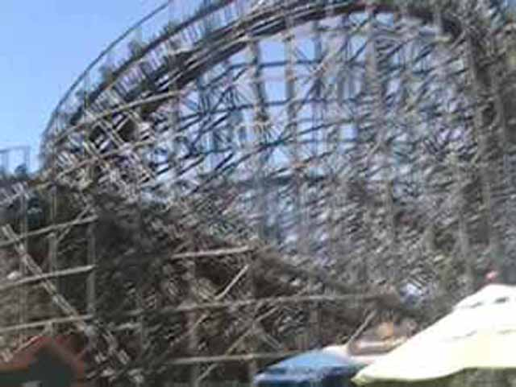

| |

Roar Review
We're here at Six Flags Discovory Kingdom. For today's ride, we'll be traveling back in time to review Roar. Once you got in the trains and pulled down the orange lap bar, away we went. We rolled through a turn and down a small drop. It was fun. We then went through a small bump before heading up the lifthill. At the top of the lifthill, you got a nice view of Six Flags Discovory Kingdom. But then, we got pulled down a nice twisty spiral drop. That drop gives a bit of speed. We then rose up a big hill and then started to get pulled down another twisty drop, leaving us with quite a bit of speed. We then twisted up into a big airtime hill. You got a little floater air during this hill (For a GCI, that's very impressive). We then drop back down. We then rise back up and headed straight into a turn. This big swooping turn gave us a bit of laterals (And a sweet view of V2). You then got a really good pop of ejector air as you plunged down a drop (Smile for the onride photo BTW). You slammed through a turn before popping out of your seat through another airtime hill. You then got pinned to the side as you went through a big swooping turn. We then flew through a shed. And in that shed, we got what? If you guessed airtime, that's correct. You got some good airtime during this part of Roar. And it was even cooler since it was in a shed. We then popped out of the shed and into a nice big swooping turn (and got more cool V2 views). We went through a couple dips as we kept turning, but then, we dipped back down to the ground, went through one final turn, go through a couple more bunny hops, and then, we finally hit the brake run. Roar was a really fun GCI, and I really liked it. I would've recommended you ride it if you were at Six Flags Discovory Kingdom back when it existed. But no need to worry about that. Because they're giving it the RMC treatment and now Joker is going to be there. And HOLY SH*T!!! That ride looks AMAZING!!! I really can't wait to ride that and experience another one of Rocky Mountain's crazy creations. =)
7/10
Location: Six Flags Discovory Kingdom
Opened: 1999
Died: August 16, 2015
Built by: Great Coasters International
Last Ridden: December 26, 2014
I have ridden this exact same ride at the following parks.
Six Flags America
Roar Photos



Home
|